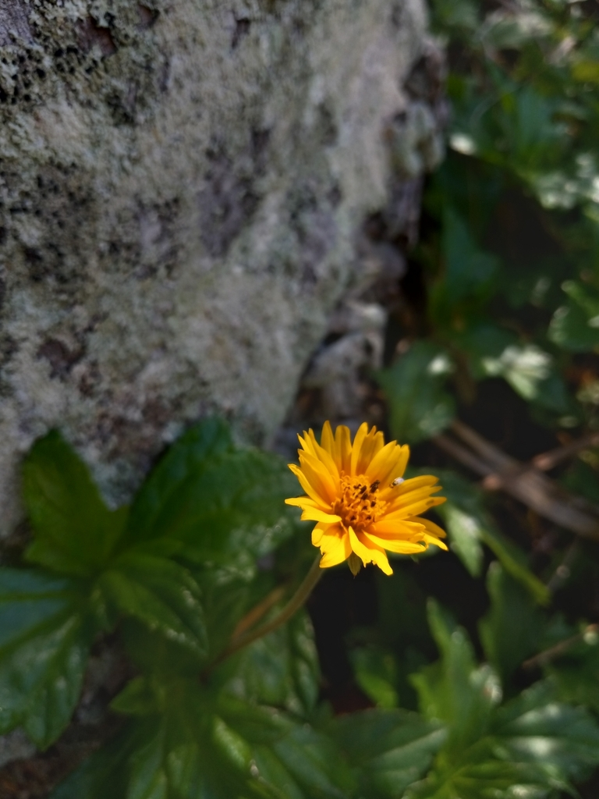

- One of the most recognizable groundcovers in Florida — the yellow daisy flowers and creeping mat habit are everywhere in landscaping, medians, and disturbed areas.
- FISC Category I invasive in Florida. Spreads into natural areas via runners and displaces native groundcovers in coastal hammocks and beach strand communities.
- Kept here as an educational specimen — a demonstration that familiar and widely planted plants can be among the most ecologically damaging.
- The park actively manages its spread.
- This is the plant our volunteers battle most. It covers nearly every corner of the park and we manage it entirely without chemicals — by hand, one runner at a time. If you see a volunteer on their knees pulling yellow daisies, now you know why. We could use the help.
Non-native. Native to Mexico, Central America, and the Caribbean. Naturalized and invasive throughout the tropical world. Member of Asteraceae — the daisy family.
- Wedelia is one of the most recognizable groundcovers in Florida - glossy three-lobed leaves and bright yellow daisy flowers covering medians, slopes, and disturbed ground year-round. It was introduced in the early 1900s from tropical America as an easy ornamental groundcover, and that ease is the problem: it forms dense mats that crowd out and shade other plants.
- It spreads almost entirely vegetatively - stems root wherever they touch soil, and broken fragments start new plants - which is why mowing or careless dumping of clippings only helps it move. It seldom relies on seed. Tough enough to shrug off drought, salt, freezes, and heavy shade, it is listed by FISC as a Category II invasive and is on the IUCN list of the world's 100 worst invasive species.
- It is easy to confuse with the park's native Beach Sunflower (PSBP-00008), which carries similar yellow daisy flowers - a useful side-by-side lesson in telling a well-behaved native from an aggressive look-alike. Palma Sola keeps Wedelia as a contained, managed educational specimen.
The yellow flowers draw bees and butterflies, but the plant's wildlife value is outweighed by its harm: by forming dense single-species mats it displaces the native plants that support far more insects and wildlife. Its ecological cost is the lesson it teaches here.
Bright yellow to yellow-orange, daisy-like, about 1 inch across, held singly on short stalks above the foliage. Nearly year-round.
Fleshy, glossy, dark green, usually three-lobed, 2 to 4 inches long, with toothed margins.
Low, mat-forming perennial; rounded stems root at the nodes as they creep.
A dense mat of glossy three-lobed leaves studded with yellow daisies. Compare with the native Beach Sunflower - similar flower, very different plant and behavior.
This isn't a food plant, but it's harmless — not significantly toxic to people, and not listed as toxic to dogs.


- © teschaim (CC-BY-NC), via iNaturalist
- © Cole Guyton (CC-BY-NC), via iNaturalist
- © Harrison Mello (CC-BY-NC), via iNaturalist